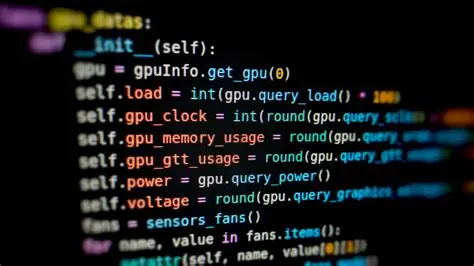
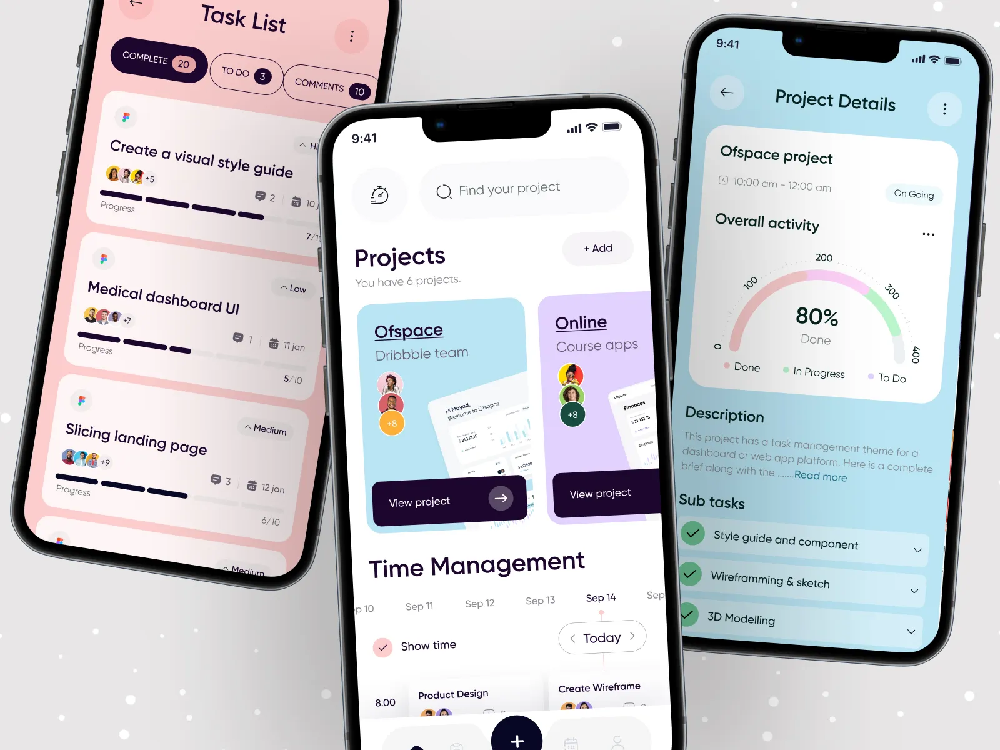

Purposes and Activities Offered
The primary purpose of a coding club is to provide a collaborative space where students can learn programming, build real-world software, and prepare for careers in technology.
Our coding club hosts hands-on software workshops, collaborative team project sprints, and high-energy hackathons to help students build real-world apps. Members gain the essential programming skills, portfolio pieces, and peer mentorship needed to prepare for a successful career in the tech industry.

Club Advisor And Requirements
Ms. Sophia Williams, helps students learn programming and supports them as they create websites, applications, and other coding projects.
The Coding Club gives students an opportunity to learn programming and create their own digital projects. Members practice coding, build websites and applications, and solve programming challenges while improving their logical thinking and technical skills.

Website Design
Members learn how to create and design websites using HTML and CSS. Students can create pages about different topics while learning how to organize information, style their websites, and make them easy for visitors to use.

Coding Challenges
Students participate in coding challenges that encourage them to think logically and find creative solutions to different problems. These challenges help members improve their programming skills while making learning fun and interactive.

App Projects
Members work together to plan and create simple digital applications. Students learn how to turn an idea into a working project while practicing programming, planning, teamwork, and problem-solving skills.